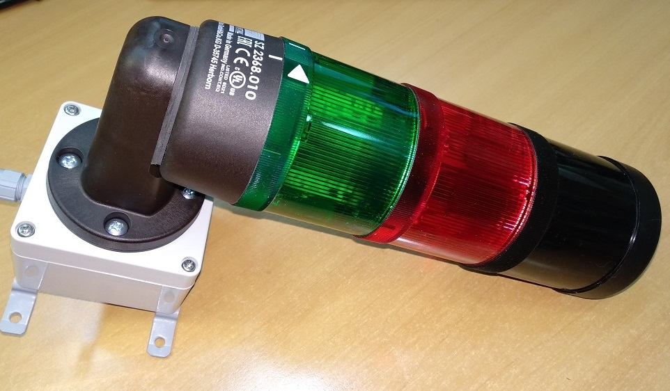

№516:
№517:
№518:
№519:
№520:
№521:
№2910:
Дата поверки
Сегодня
A
0
(кБк)
109
Cd (461.4 дней)
137
Cs (11019.6 дней)
Custom
(кБк)
Система радиационного контроля
Настройка СРК
МРП (Пешеходный монитор)
Портальный монитор
Адаптер интерфейсный АИ-АТ941
Адаптер интерфейсный АИ-АТ942
Адаптер интерфейсный АИ-АТ943
Блок регистрации
Пульт управления ПУ-АТ900
SARK2 и МРП
Шаблон листа заказов
Выходной контроль СРК
AT2327 РЭ 2016
ЗАКАЗАТЬ
Блок детектирования гамма излучения
БДКГ-01
БДКГ-02
РЕМОНТ
Как сделать калибровку по фону и снять градуировочное число
Паспорт настройки
Расчет протокола поверки
Шаблон для записи данных
Журнал градуировки БДКГ-02
БДКГ-04
База настройки БДКГ-04
Данные с линейки
БДКГ-22/23. Прошивка и настройка
Прошивка
Как подключаться
Как принудительно переключать диапазоны
Как настраивать фон
Как записать серийный номер в память БД
Протокол поверки
Таблица записи фона
Перечень
Калибровочный сертификат
Журнал градуировок БДКГ-22
Журнал градуировок БДКГ-23
Журнал градуировок БДКГ-23/1
БДКГ-25
БДКГ-27. Как сделать протокол поверки.
БДКГ-35
БДКГ-204. Прошивка.
БДКГ-224
БДМГ-АТ2343
Если не подключается
Защита от статики
Посмотреть работу каждого счетчика
Шаблон для распечатывания коэффициентов
Если не прошел линейку
Как сделать автокалибровку
Как сделать проверку "пультом"
Как снять показания с "ошейником"
Паспорт настройки
Шаблон протокола поверки
Всякое разное
Сигнализатор
6102. Настройка нейтронного детектора
БДКН-02. Установить коэффициенты. Прошить
БДКН-01/БДКН-03
БОИ, БОИ-2. Преобразователь напряжения
Адаптер USB-БД
Проверка БЕТА счетчиков
Проверка делителя
БДПБ-01
АТ6130
ПДУ
11ХХ
ДКР-АТ1103М
Как прошить
Как сделать инициализацию 957
Как проверить ток потребления и ток заряда
Смещение -3В...-5В
Как включить спектрометрический режим
ДКС-АТ1121
База настройки АТ1121
Данные с линейки
ДКС-АТ1123
База настройки АТ1123
Проверка умножителя
Как переключать режимы с непрерывного в импульсный
Проверка умножителя 1123
1125, 1103М. Проверка платы УО
Файлы, документы
Список актуальных прошивок
Калибровочные сертификаты и протоколы поверки
Макрос для OpenOffice (Протоколы поверки)
GMS for Corel
Гурачевский.Радиационный контроль
Каталог продукции АТОМТЕХ
СРК
БДКГ-02
БДКГ-22/23
ДКР-1103
ДКС-1121
ДКС-1123

Сигнализатор
Документы